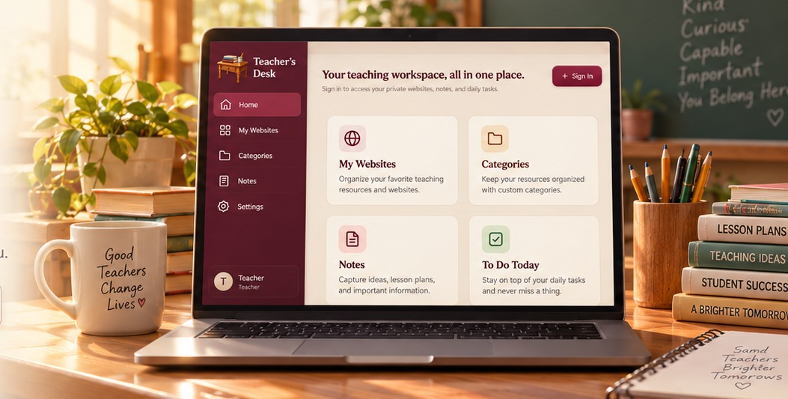

My Websites
Save and organize your favorite teaching resources for quick access anytime.
Organize your favorite websites, keep notes, manage daily tasks, and create a workspace that works for you.

Save and organize your favorite teaching resources for quick access anytime.
Keep your favorite links together, organized and easy to open.
Capture lesson plans, ideas, meeting notes, and anything important.
Stay focused with a simple daily task list designed for teachers.
MADE FOR TEACHERS
Teacher Desk brings your teaching websites, shortcuts, notes, and tasks together in a private workspace you can use across your devices.
Have an account? Use Sign In above. New here? Create your account to start your own private workspace.
Opening your desk…